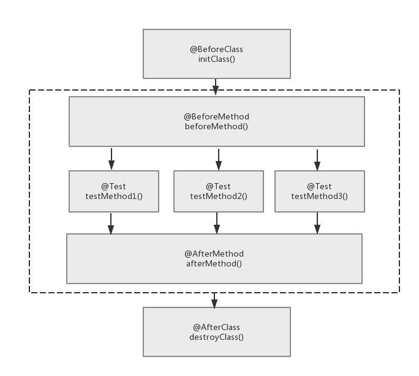

前言
最近在从零开始搭建一个基于SSM(SpringMVC + Spring + Mybatis)的web练手项目。一开始在做这个web项目的时候没有关注单元测试与日志这一方面的内容，导致项目在代码测试阶段效率极低，每次都要重启tomcat服务器部署代码然后测试结果，所以在完成了初步的SSM开发环境的搭建与后台基本逻辑代码的之后，我觉得应该抽出时间学一学单元测试与日志了。
log4j
什么是log4j
官方科普：log4j是一个使用Java语言编写的，可靠、快速、灵活的日志框架，使用 Apache Software License授权，并且log4j是高度可配置的，在运行期使用外部的配置文件对其进行配置。它按照优先级别记录日志，并可将日志信息定向输出到各种介质。
通俗来说：在一些简单的代码中，我们曾经使用过一种叫做”System.out debug”也称肉眼debug大法，直接在程序运行过程中在控制台输出我们关注的变量，通过判断输出的值是否满足程序条件来定位程序问题出在哪。既然大家理解了”System.out debug”大法，那么log4j可以理解为对system.out的优势替代，我们可以用它来记录程序运行的情况。
基本构件
Log4j由三个重要的组件构成：
- logger(记录器)：程序中利用这个对象进行日志信息的输出
- appender(输出源)：定义了日志信息输出到哪里去
- layout(布局)：定义日志输出的格式
还一个需要配置的是日志所记录信息的级别，我们可以给日志定义不同的级别来输出不同的信息：
- debug：调试信息
- info：系统运行的时候向程序调用者提示的信息
- warn：警告
- error：错误
- fatal：致命错误
假设我们给日志设定为debug级别，那么它将记录debug,info,warn,error,fatal这5个基本的信息。如果定义为warn级别，那么error,fatal信息将不会被记录。
使用方法
得到记录器logger，记录器用于输出日志信息：
1public static Logger getLogger()读取配置文件，配置文件中定义了日志的级别以及输出到文件还是控制台和输出的格式信息
- 当完成1，2之后，就可以在代码中插入记录日志的代码了，如下所示：1234Logger.debug(Object message);Logger.info(Object message);Logger.wanr(Object message);Logger.error(Object message);
如果是在web项目中使用log4j，就要使用properties文件配置log4j，然后使用servlet加载log4j的properties配置文件，执行log4j的初始化过程。
单元测试
什么是单元测试
官方科普：软件测试可以分为单元测试，集成测试，功能测试，系统测试，其中单元测试与集成测试是由开发人员保障的。单元测试是开发者编写的一小段代码，用于检验目标代码的很小的，很明确功能是否正确。
通俗来说，单元测试就是测试我们写的每个函数是不是没有bug的，因为只有防微杜渐，一点一点编写没有bug的代码，才可以保证在最后系统集成的时候不出现意想不到的bug。
单元测试还有一个重要的功用：在一般情况下，一个功能函数或者模块可能会对其他模块由所依赖，比如在开发service层代码的时候需要用到dao层的方法。那么，在对service模块进行单元测试时，我们是希望屏蔽对dao层的依赖的，仅仅测试service层的功能。这时单元测试框架给我们提供了模拟对象,它根据外在模块的接口模拟特定的操作行为，这样就可以在假设关联模块dao层正确工作情况下，验证service模块的正确性了。
关于Assert
在介绍测试框架之前，需要先了解java的断言(assert)。关于用法很简单，就两种：
- assert condition ：这里condition是一个必须为真(true)的表达式。如果表达式的结果为true，那么断言为真，并且无任何作为。如果表达式为false，则断言失败，则会抛出一个AssertionError对象，用于表达系统运行错误。
- assert condition(expr) ：与上述功能一致，只是添加了expr用于在断言失败的时候输出信息。
TestNG框架
官方科普：TestNG是一个设计用来简化广泛的测试需求的测试框架，借鉴了JUnit和NUnit，但引入了新的功能。相比于JUnit只适合做单元测试，TestNG还可以用于集成测试。
通俗来说，TestNG就是一个测试的框架，同时符合测试驱动开发的编码风格，也就是说先想好测试用例，再开发，开发的目的就是要让测试用例通过。
再通俗一点，测试驱动开发就好比我们在leetcode上刷题，我们解题(开发)的目的就是要让leetcode提供的所有case(测试用例)都通过。
TestNG生命周期
TestNG的测试用例的生命周期，如图所示：

首先，类级初始化资源和方法级初始化资源2个方法用于搭建测试用例所需的资源环境，然后执行测试用例中的测试方法，最后，释放之前初始化的资源。其中，类级初始化，销毁资源在一个测试用例中只运行一次；方法级初始化，销毁资源在执行测试用例的每个测试方法中都会运行，以防测试方法之间互相影响。
TestNG使用
为了方便使用断言Assert类，在测试类中需要 import static org.testing.Assert.* ；(注意要静态导入!)
在使用TestNG做单元测试与JUnit大同小异，都是通过@Test注解的方式标注一个测试方法。比如，在@Test注解传入expected参数值，可以测试异常；在@Test注解中传入timeOut参数值，可以做超时测试；同时还支持参数化测试，将测试的参数一次性传入，统一进行测试不需要为每个参数都写一个测试方法，等等。单元测试的用法很简单就不再详细介绍了。
目前为止，只用到了TestNG做单元测试的功能(与JUnit大部分重复)，关于模拟对象和TestNG的集成测试功能，若以后项目中用到，再拿来介绍。